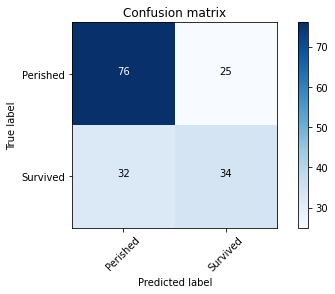
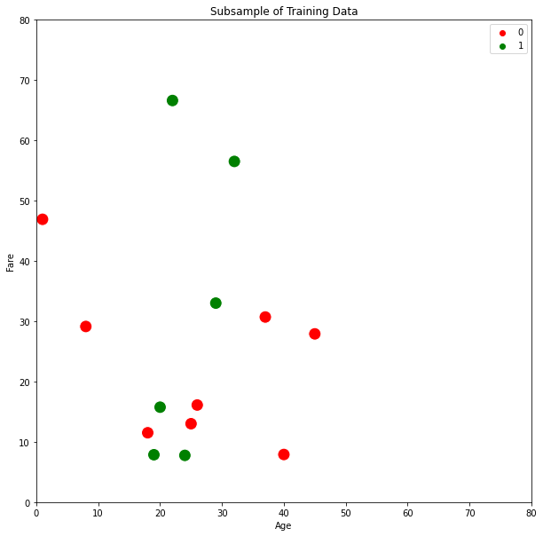
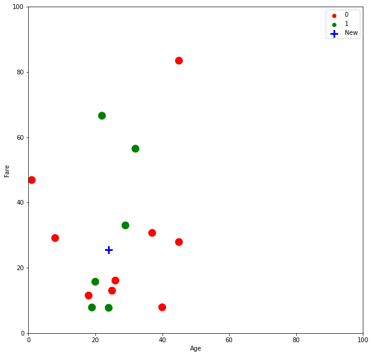
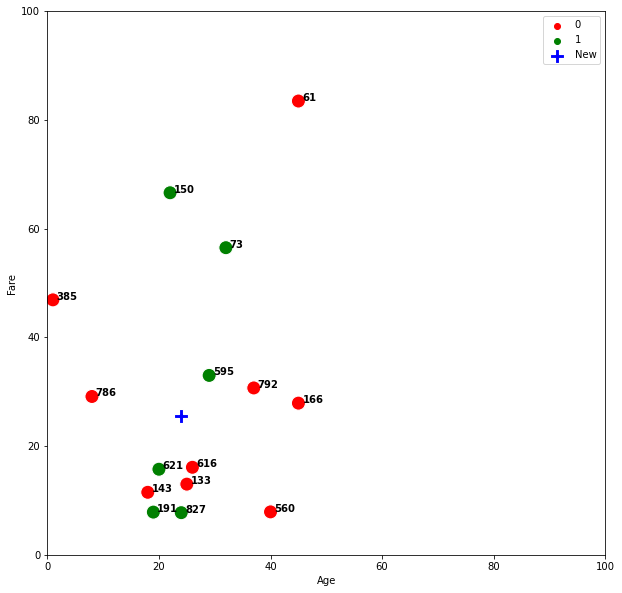
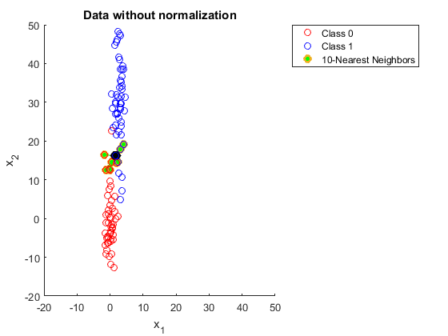
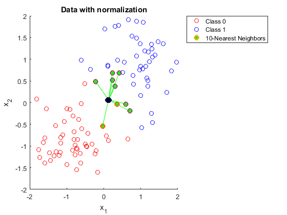
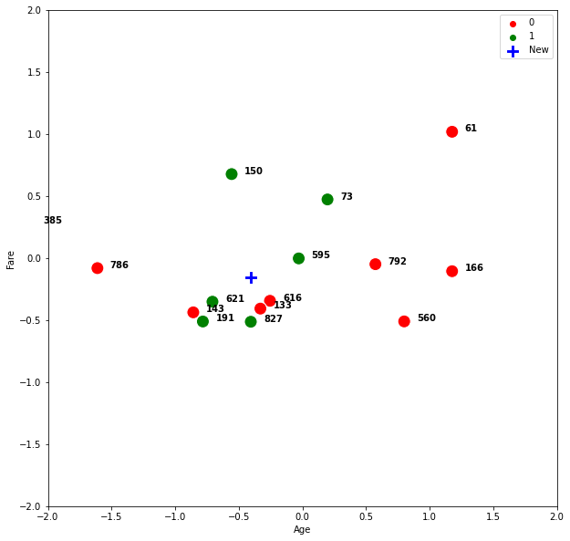
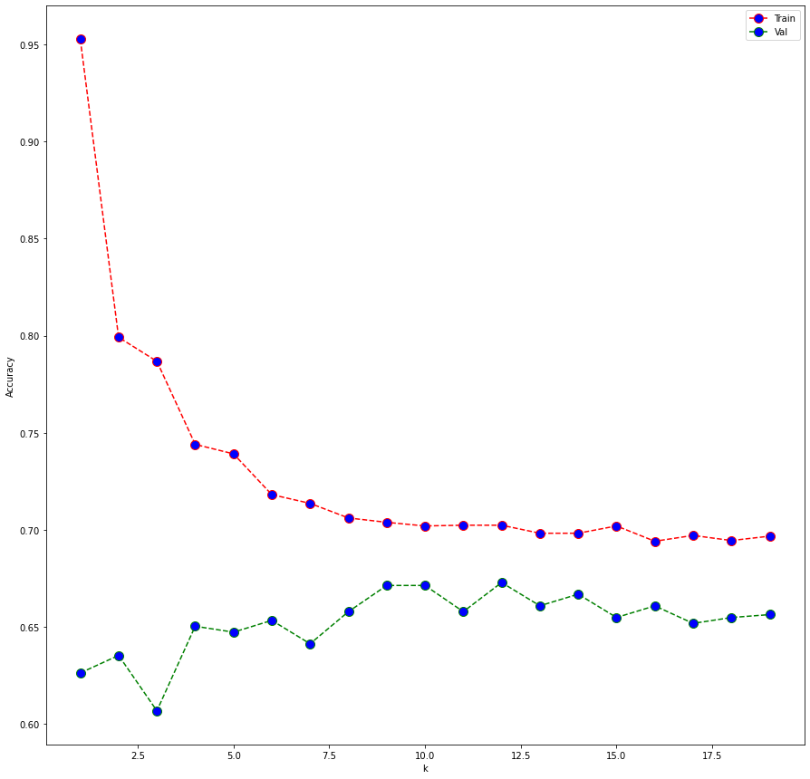
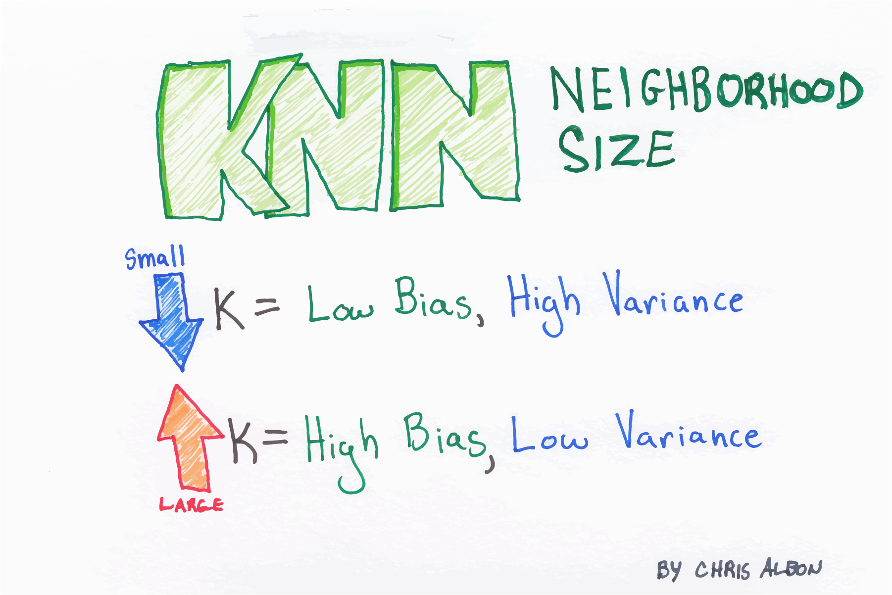
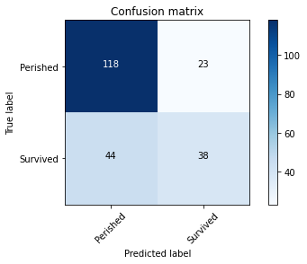

K-Nearest Neighbors#
import os
import sys
module_path = os.path.abspath(os.path.join(os.pardir, os.pardir))
if module_path not in sys.path:
sys.path.append(module_path)
import pandas as pd
import numpy as np
import matplotlib.pyplot as plt
import seaborn as sns
from sklearn.metrics import f1_score, confusion_matrix,\
recall_score, precision_score, accuracy_score
from src.confusion import plot_confusion_matrix
from src.k_classify import predict_one
from src.plot_train import *
from src.euclid import *
from sklearn.preprocessing import StandardScaler, MinMaxScaler
from sklearn.neighbors import KNeighborsClassifier, NearestNeighbors
from sklearn.model_selection import train_test_split, KFold
import warnings
warnings.filterwarnings('ignore')
%load_ext autoreload
%autoreload 2
Agenda#
SWBAT:
describe the \(k\)-nearest neighbors algorithm;
identify multiple common distance metrics;
tune \(k\) appropriately in response to models with high bias or variance.
sklearn.neighbors#
\(k\)-Nearest Neighbors is a modeling technique that works for both regression and classification problems. Here we’ll apply it to a version of the Titanic dataset.
titanic = pd.read_csv('data/cleaned_titanic.csv')
titanic = titanic.iloc[:, :-2]
titanic.head()
| PassengerId | Survived | Pclass | Age | SibSp | Parch | Fare | youngin | male | |
|---|---|---|---|---|---|---|---|---|---|
| 0 | 1 | 0 | 3 | 22.0 | 1 | 0 | 7.2500 | False | 1 |
| 1 | 2 | 1 | 1 | 38.0 | 1 | 0 | 71.2833 | False | 0 |
| 2 | 3 | 1 | 3 | 26.0 | 0 | 0 | 7.9250 | False | 0 |
| 3 | 4 | 1 | 1 | 35.0 | 1 | 0 | 53.1000 | False | 0 |
| 4 | 5 | 0 | 3 | 35.0 | 0 | 0 | 8.0500 | False | 1 |
For visualization purposes, we will use only two features for our first model.
X = titanic[['Age', 'Fare']]
y = titanic['Survived']
y.value_counts()
0 549
1 340
Name: Survived, dtype: int64
Train-Test Split#
This dataset of course presents a binary classification problem, with our target being the Survived feature.
X_train, X_test, y_train, y_test = train_test_split(X, y,
random_state=42,
test_size=0.25)
Validation Split#
X_t, X_val, y_t, y_val = train_test_split(X_train, y_train,
random_state=42,
test_size=0.25)
knn = KNeighborsClassifier()
knn.fit(X_t, y_t)
print(f"training accuracy: {knn.score(X_t, y_t)}")
print(f"validation accuracy: {knn.score(X_val, y_val)}")
y_hat = knn.predict(X_val)
plot_confusion_matrix(confusion_matrix(y_val, y_hat), classes=['Perished', 'Survived'])
training accuracy: 0.7474949899799599
validation accuracy: 0.6586826347305389
Confusion Matrix, without normalization
[[76 25]
[32 34]]

X_for_viz = X_t.sample(15, random_state=40)
y_for_viz = y_t[X_for_viz.index]
fig, ax = plt.subplots(figsize=(10, 10))
sns.scatterplot(X_for_viz['Age'], X_for_viz['Fare'],
hue=y_for_viz, palette={0: 'red', 1: 'green'},
s=200, ax=ax)
ax.set_xlim(0, 80)
ax.set_ylim(0, 80)
plt.legend()
plt.title('Subsample of Training Data');

The \(k\)-NN algorithm works by simply storing the training set in memory, then measuring the distance from the training points to a new point.
Let’s drop a point from our validation set into the plot above.
X_for_viz = X_t.sample(15, random_state=40)
y_for_viz = y_t[X_for_viz.index]
fig, ax = plt.subplots(figsize=(10, 10))
sns.scatterplot(X_for_viz['Age'], X_for_viz['Fare'],
hue=y_for_viz, palette={0: 'red', 1: 'green'},
s=200, ax=ax)
plt.legend()
#################^^^Old code^^^##############
####################New code#################
# Let's take one sample from our validation set and plot it
new_x = pd.DataFrame(X_val.loc[484]).T
new_y = y_val[new_x.index]
sns.scatterplot(new_x['Age'], new_x['Fare'], color='blue',
s=200, ax=ax, label='New', marker='P')
ax.set_xlim(0, 100)
ax.set_ylim(0, 100);

new_x
| Age | Fare | |
|---|---|---|
| 484 | 24.0 | 25.4667 |
Then, \(k\)-NN finds the \(k\) nearest points. \(k\) corresponds to the n_neighbors parameter defined when we instantiate the classifier object. If \(k\) = 1, then the prediction for a point will simply be the value of the target for the nearest point.
\(k=1\)#
knn = KNeighborsClassifier(n_neighbors=1)
Let’s fit our training data, then predict what our validation point will be based on the (one) closest neighbor.
knn.fit(X_for_viz, y_for_viz)
knn.predict(new_x)
array([1])
When we raise the value of \(k\), \(k\)-NN will act democratically: It will find the \(k\) closest points, and take a vote based on the labels.
Question: How should \(k\)-NN work for a regression problem?
\(k=3\)#
Let’s raise \(k\) to 3.
knn3 = KNeighborsClassifier(n_neighbors=3)
knn3.fit(X_for_viz, y_for_viz)
knn3.predict(new_x)
array([1])
It’s not easy to tell what which points are closest by eye.
Let’s update our plot to add indices.
X_for_viz = X_t.sample(15, random_state=40)
y_for_viz = y_t[X_for_viz.index]
fig, ax = plt.subplots(figsize=(10,10))
sns.scatterplot(X_for_viz['Age'], X_for_viz['Fare'], hue=y_for_viz,
palette={0: 'red', 1: 'green'}, s=200, ax=ax)
# Now let's take another sample
# new_x = X_val.sample(1, random_state=33)
new_x = pd.DataFrame(X_val.loc[484]).T
new_x.columns = ['Age', 'Fare']
new_y = y_val[new_x.index]
print(new_x)
sns.scatterplot(new_x['Age'], new_x['Fare'], color='blue',
s=200, ax=ax, label='New', marker='P')
ax.set_xlim(0, 100)
ax.set_ylim(0, 100)
plt.legend()
#################^^^Old code^^^##############
####################New code#################
# add annotations one by one with a loop
for index in X_for_viz.index:
ax.text(X_for_viz.Age[index]+0.7, X_for_viz.Fare[index],
s=index, horizontalalignment='left', size='medium',
color='black', weight='semibold')
Age Fare
484 24.0 25.4667

We can use sklearn’s NearestNeighors object to see the exact calculations.
df_for_viz = pd.merge(X_for_viz, y_for_viz, left_index=True, right_index=True)
neighbor = NearestNeighbors(3)
neighbor.fit(X_for_viz)
nearest = neighbor.kneighbors(new_x)
nearest
(array([[ 9.04160433, 9.5778426 , 10.51549452]]), array([[11, 5, 0]]))
df_for_viz.iloc[nearest[1][0]]
| Age | Fare | Survived | |
|---|---|---|---|
| 595 | 29.0 | 33.0000 | 1 |
| 616 | 26.0 | 16.1000 | 0 |
| 621 | 20.0 | 15.7417 | 1 |
new_x
| Age | Fare | |
|---|---|---|
| 484 | 24.0 | 25.4667 |
print(((29-24)**2 + (33-25.4667)**2)**0.5)
print(((26-24)**2 + (16.1-25.4667)**2)**0.5)
print(((20-24)**2 + (15.7417-25.4667)**2)**0.5)
9.041604331643805
9.57784260102451
10.515494519992865
\(k=5\)#
And with five neighbors?
knn = KNeighborsClassifier(n_neighbors=5)
knn.fit(X_for_viz, y_for_viz)
knn.predict(new_x)
array([0])
Let’s iterate through \(k\), odd numbers 1 through 10, and see the predictions.
for k in range(1, 10, 2):
knn = KNeighborsClassifier(n_neighbors=k)
knn.fit(X_for_viz, y_for_viz)
print(knn.predict(new_x))
[1]
[1]
[0]
[0]
[0]
Which models were correct?
new_y
484 0
Name: Survived, dtype: int64
Scaling#
You may have suspected that we were leaving something out. For any distance-based algorithms, scaling is very important. Look at how the shape of the array changes before and after scaling.


Let’s look at our data_for_viz dataset:
X_train, X_test, y_train, y_test = train_test_split(X, y,
random_state=42,
test_size=0.25)
X_t, X_val, y_t, y_val = train_test_split(X_train, y_train,
random_state=42,
test_size=0.25)
knn = KNeighborsClassifier(n_neighbors=5)
ss = StandardScaler()
X_ind = X_t.index
X_col = X_t.columns
X_t_s = pd.DataFrame(ss.fit_transform(X_t))
X_t_s.index = X_ind
X_t_s.columns = X_col
X_v_ind = X_val.index
X_val_s = pd.DataFrame(ss.transform(X_val))
X_val_s.index = X_v_ind
X_val_s.columns = X_col
knn.fit(X_t_s, y_t)
print(f"training accuracy: {knn.score(X_t_s, y_t)}")
print(f"Val accuracy: {knn.score(X_val_s, y_val)}")
y_hat = knn.predict(X_val_s)
training accuracy: 0.717434869739479
Val accuracy: 0.6467065868263473
# The plot_train() function just does what we did above.
plot_train(X_t, y_t, X_val, y_val)
plot_train(X_t_s, y_t, X_val_s, y_val, -2, 2, text_pos=0.1 )
Age Fare
484 24.0 25.4667
Age Fare
484 -0.4055 -0.154222

Look at how much that changes things.
Look at points 166 and 150.
Look at the group 621, 143, and 191.
Now let’s run our classifier on scaled data and compare to unscaled.
X_train, X_test, y_train, y_test = train_test_split(X, y,
random_state=42,
test_size=0.25)
X_t, X_val, y_t, y_val = train_test_split(X_train, y_train,
random_state=42,
test_size=0.25)
# The predict_one() function prints predictions on a given point
# (#484) for k-nn models with k ranging from 1 to 10.
predict_one(X_t, X_val, y_t, y_val)
[1]
[0]
[1]
[0]
[0]
[0]
[0]
[0]
[0]
[0]
mm = MinMaxScaler()
X_t_s = pd.DataFrame(mm.fit_transform(X_t))
X_t_s.index = X_t.index
X_t_s.columns = X_t.columns
X_val_s = pd.DataFrame(mm.transform(X_val))
X_val_s.index = X_val.index
X_val_s.columns = X_val.columns
predict_one(X_t_s, X_val_s, y_t, y_val)
[0]
[0]
[0]
[0]
[1]
[1]
[1]
[1]
[1]
[1]
More Resources on Scaling#
https://sebastianraschka.com/Articles/2014_about_feature_scaling.html
http://datareality.blogspot.com/2016/11/scaling-normalizing-standardizing-which.html
\(k\) and the Bias-Variance Tradeoff#
X_train, X_test, y_train, y_test = train_test_split(X, y,
random_state=42,
test_size=0.25)
# Let's slowly increase k and see what happens to our accuracy scores.
kf = KFold(n_splits=5)
k_scores_train = {}
k_scores_val = {}
for k in range(1, 20):
knn = KNeighborsClassifier(n_neighbors=k)
accuracy_score_t = []
accuracy_score_v = []
for train_ind, val_ind in kf.split(X_train, y_train):
X_t, y_t = X_train.iloc[train_ind], y_train.iloc[train_ind]
X_v, y_v = X_train.iloc[val_ind], y_train.iloc[val_ind]
mm = MinMaxScaler()
X_t_ind = X_t.index
X_v_ind = X_v.index
X_t = pd.DataFrame(mm.fit_transform(X_t))
X_t.index = X_t_ind
X_v = pd.DataFrame(mm.transform(X_v))
X_v.index = X_v_ind
knn.fit(X_t, y_t)
y_pred_t = knn.predict(X_t)
y_pred_v = knn.predict(X_v)
accuracy_score_t.append(accuracy_score(y_t, y_pred_t))
accuracy_score_v.append(accuracy_score(y_v, y_pred_v))
k_scores_train[k] = np.mean(accuracy_score_t)
k_scores_val[k] = np.mean(accuracy_score_v)
k_scores_train
{1: 0.9527049330643681,
2: 0.7991818194642328,
3: 0.786796258940033,
4: 0.7440004796230727,
5: 0.7391153775621041,
6: 0.7181008336977528,
7: 0.7135951981266487,
8: 0.7060876863829367,
9: 0.7038299313010482,
10: 0.7019579906614567,
11: 0.7023381624793691,
12: 0.7023395731354654,
13: 0.6982049401176488,
14: 0.6982063507737448,
15: 0.7019636332858412,
16: 0.6940759497242168,
17: 0.6970771205687767,
18: 0.6944497735896966,
19: 0.6967018860472005}
k_scores_val
{1: 0.6262035686230502,
2: 0.6352485691841544,
3: 0.6066883626977893,
4: 0.6502749410840535,
5: 0.6472225339468073,
6: 0.6532936819661093,
7: 0.6412411626080126,
8: 0.6577712939064078,
9: 0.6712939064078105,
10: 0.6712939064078105,
11: 0.6577937380765346,
12: 0.6727976658063068,
13: 0.660823701043654,
14: 0.6668050723824487,
15: 0.6547862192795422,
16: 0.6607900347884638,
17: 0.6517450342273594,
18: 0.6547749971944787,
19: 0.656278756592975}
fig, ax = plt.subplots(figsize=(15, 15))
ax.plot(list(k_scores_train.keys()), list(k_scores_train.values()),
color='red', linestyle='dashed', marker='o',
markerfacecolor='blue', markersize=10, label='Train')
ax.plot(list(k_scores_val.keys()), list(k_scores_val.values()),
color='green', linestyle='dashed', marker='o',
markerfacecolor='blue', markersize=10, label='Val')
ax.set_xlabel('k')
ax.set_ylabel('Accuracy')
plt.legend();

The relation between \(k\) and bias/variance#

mm = MinMaxScaler()
X_train_ind = X_train.index
X_train = pd.DataFrame(mm.fit_transform(X_train))
X_train.index = X_train_ind
X_test_ind = X_test.index
X_test = pd.DataFrame(mm.transform(X_test))
X_test.index = X_test_ind
knn = KNeighborsClassifier(n_neighbors=9)
knn.fit(X_train, y_train)
print(f"training accuracy: {knn.score(X_train, y_train)}")
print(f"Test accuracy: {knn.score(X_test, y_test)}")
y_hat = knn.predict(X_test)
plot_confusion_matrix(confusion_matrix(y_test, y_hat), classes=['Perished', 'Survived'])
training accuracy: 0.7132132132132132
Test accuracy: 0.6995515695067265
Confusion Matrix, without normalization
[[118 23]
[ 44 38]]

recall_score(y_test, y_hat)
0.4634146341463415
precision_score(y_test, y_hat)
0.6229508196721312